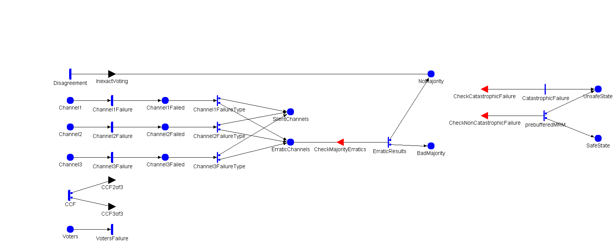

Model: TMRModel

| Place Names | Initial Markings |
|---|---|
| BadMajority | |
| Channel1 | |
| Channel1Failed | |
| Channel2 | |
| Channel2Failed | |
| Channel3 | |
| Channel3Failed | |
| ErraticChannels | |
| NoBadMajority | |
| NoMajority | |
| SafeState | |
| SilentChannels | |
| UnsafeState | |
| Voters | |
| Timed Activity: | CCF |
|---|---|
| Distribution Parameters | Ratefr_complex * (1-p_individual) |
| | |
| | |
| | case 1(1-p_individual-p_ccf3of3)/(1-p_individual)case 2 p_ccf3of3/(1-p_individual) |
| Timed Activity: | Channel1Failure |
|---|---|
| Distribution Parameters | Ratefr_complex * p_individual |
| | |
| | |
| Timed Activity: | Channel2Failure |
|---|---|
| Distribution Parameters | Ratefr_complex * p_individual |
| | |
| | |
| Timed Activity: | Channel3Failure |
|---|---|
| Distribution Parameters | Ratefr_complex * p_individual |
| | |
| | |
| Timed Activity: | Disagreement |
|---|---|
| Distribution Parameters | Rater_disagreement |
| | |
| | |
| Timed Activity: | VotersFailure |
|---|---|
| Distribution Parameters | Ratefr_simple * Voters->Mark() |
| | |
| | |
| Instantaneous Activity: | Channel1FailureType |
|---|---|
| | case 11-p_erraticcase 2 p_erratic |
| Instantaneous Activity: | Channel2FailureType |
|---|---|
| | case 11-p_erraticcase 2 p_erratic |
| Instantaneous Activity: | Channel3FailureType |
|---|---|
| | case 11-p_erraticcase 2 p_erratic |
| Instantaneous Activity: | ErraticResults |
|---|---|
| | case 1p_badmajoritycase 2 1-p_badmajority |
| Instantaneous Activity: | prebufferedMRM |
|---|---|
| | case 11-p_MRMcase 2 p_MRM |
| Instantaneous Activities Without Cases: |
|---|
| CatastrophicFailure |
| Input Gate: | CheckCatastrophicFailure |
|---|---|
| | SafeState->Mark()+UnsafeState->Mark()==0 && (BadMajority->Mark()==1 || (SilentChannels->Mark()==2 && ErraticChannels->Mark()==1)) |
| | ; |
| Input Gate: | CheckMajorityErratics |
|---|---|
| | ErraticChannels->Mark()>=2 |
| | ErraticChannels->Mark()=0; |
| Input Gate: | CheckNonCatastrophicFailure |
|---|---|
| | SafeState->Mark()+UnsafeState->Mark()==0 && (SilentChannels->Mark()==3 || Voters->Mark()==0 || NoBadMajority->Mark()==1 || NoMajority->Mark()==1 || (SilentChannels->Mark()==1 && ErraticChannels->Mark()==1)) |
| | ; |
| Output Gate: | CCF2of3 |
|---|---|
| |
if (Channel1->Mark()+Channel2->Mark()==2) {Channel1->Mark()=0; Channel2->Mark()=0; Channel1Failed->Mark()=1; Channel2Failed->Mark()=1;}
else if (Channel1->Mark()+Channel3->Mark()==2) {Channel1->Mark()=0; Channel3->Mark()=0; Channel1Failed->Mark()=1; Channel3Failed->Mark()=1;}
else if (Channel2->Mark()+Channel3->Mark()==2) {Channel2->Mark()=0; Channel3->Mark()=0; Channel2Failed->Mark()=1; Channel3Failed->Mark()=1;}
|
| Output Gate: | CCF3of3 |
|---|---|
| |
if(Channel1->Mark()+Channel2->Mark()+Channel3->Mark()==3)
{
Channel1->Mark()=0;
Channel2->Mark()=0;
Channel3->Mark()=0;
Channel1Failed->Mark()=1;
Channel2Failed->Mark()=1;
Channel3Failed->Mark()=1;
}
|
| Output Gate: | InexactVoting |
|---|---|
| | if (Channel1->Mark()+Channel2->Mark()+Channel3->Mark()>=2) NoMajority->Mark()=1; |
| | | | | | | | |
|---|---|---|---|---|---|---|---|
| fr_complex | double | Fixed | 1.0E-5 | - | - | - | - |
| fr_simple | double | Fixed | 1.0E-6 | - | - | - | - |
| p_MRM | double | Manual | [0.75, 0.85, 0.95] | - | - | - | - |
| p_badmajority | double | Manual | [0.01, 0.05, 0.1] | - | - | - | - |
| p_ccf3of3 | double | Fixed | 0.025 | - | - | - | - |
| p_erratic | double | Manual | [0.1, 0.3, 0.5] | - | - | - | - |
| p_individual | double | Manual | [0.8, 0.875, 0.95] | - | - | - | - |
| r_disagreement | double | Manual | [1.0E-4, 1.0E-6, 1.0E-8] | - | - | - | - |
| Performance Variable Model: TMRReward | ||
|---|---|---|
| Top Level Model Information | Child Model Name | TMRModel |
| Model Type | SAN Model | |
| Performance Variable : p_safestate | |||
|---|---|---|---|
| Affecting Models | TMRModel | ||
| Impulse Functions | |||
| Reward Function | (Reward is over all Available Models)if (TMRModel->SafeState->Mark()==1) return 1; | ||
| Simulator Statistics | Type | Instant of Time | |
| Options | Estimate Mean | ||
| Include Lower Bound on Interval Estimate | |||
| Include Upper Bound on Interval Estimate | |||
| Estimate out of Range Probabilities | |||
| Confidence Level is Relative | |||
| Parameters | Start Time | 5000.0,15000.0,25000.0,35000.0, | |
| Confidence | Confidence Level | 0.95 | |
| Confidence Interval | 0.1 | ||
| Performance Variable : p_unsafestate | |||
|---|---|---|---|
| Affecting Models | TMRModel | ||
| Impulse Functions | |||
| Reward Function | (Reward is over all Available Models)if (TMRModel->UnsafeState->Mark()==1) return 1; | ||
| Simulator Statistics | Type | Instant of Time | |
| Options | Estimate Mean | ||
| Include Lower Bound on Interval Estimate | |||
| Include Upper Bound on Interval Estimate | |||
| Estimate out of Range Probabilities | |||
| Confidence Level is Relative | |||
| Parameters | Start Time | 5000.0,15000.0,25000.0,35000.0, | |
| Confidence | Confidence Level | 0.95 | |
| Confidence Interval | 0.1 | ||
| Performance Variable : p_safestate_steadystate | |||
|---|---|---|---|
| Affecting Models | TMRModel | ||
| Impulse Functions | |||
| Reward Function | (Reward is over all Available Models)if (TMRModel->SafeState->Mark()==1) return 1; | ||
| Simulator Statistics | Type | Steady State | |
| Options | Estimate Mean | ||
| Include Lower Bound on Interval Estimate | |||
| Include Upper Bound on Interval Estimate | |||
| Estimate out of Range Probabilities | |||
| Confidence Level is Relative | |||
| Parameters | Initial Transient | 0.0 | |
| Batch Size | 1.0 | ||
| Confidence | Confidence Level | 0.95 | |
| Confidence Interval | 0.1 | ||
| Performance Variable : p_unsafestate_steadystate | |||
|---|---|---|---|
| Affecting Models | TMRModel | ||
| Impulse Functions | |||
| Reward Function | (Reward is over all Available Models)if (TMRModel->UnsafeState->Mark()==1) return 1; | ||
| Simulator Statistics | Type | Steady State | |
| Options | Estimate Mean | ||
| Include Lower Bound on Interval Estimate | |||
| Include Upper Bound on Interval Estimate | |||
| Estimate out of Range Probabilities | |||
| Confidence Level is Relative | |||
| Parameters | Initial Transient | 0.0 | |
| Batch Size | 1.0 | ||
| Confidence | Confidence Level | 0.95 | |
| Confidence Interval | 0.1 | ||